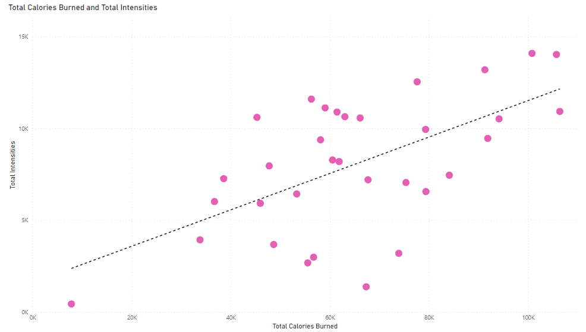

In this project, we analyze smart device data to gain insight into how customers are using smart devices, and help guide marketing strategy for Bellabeat's app, with the aim to provide women with health data related to their activity, sleep, stress, menstrual cycle and mindfulness habits.
In this project, we dive into TheLook's eCommerce dataset to uncover key trends and patterns. From customer behavior to order volumes, we explore the data to help TheLook make informed business decisions and drive growth in the competitive eCommerce landscape.

In a dynamic and competitive market, strategic planning is crucial for the success of any venture. As an individual contributor, I took on the challenge of formulating a comprehensive strategic plan for The Di Café, a startup venture. This plan covered all aspects of the business, including launch strategy, crisis management, media outreach, workforce planning, community engagement, and customer relationship management.
This project focuses on analyzing whether AEON, a prominent Japanese retail company, should enter the Canadian market. Through a comprehensive examination of AEON's industry position, management, marketing strategies, and financial performance, alongside an analysis of Canada's market demographics, economy, cultural aspects, government regulations, and recent events, this report aims to provide a strategic recommendation regarding AEON's potential expansion into Canada.